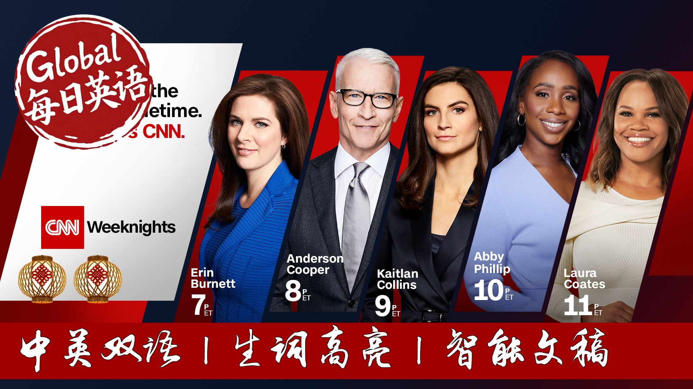

【CNN News 20250919 吉米深夜脱口秀节目被无限期暂停】
Summary: ABC has indefinitely suspended Jimmy Kimmel's late-night show following his controversial comments about Charlie Kirk's assassination. The host accused right-wing media of exploiting the tragedy for political gain, drawing condemnation from FCC Chair Brendan Carr and praise from President Trump. The decision comes amid growing concerns about free speech crackdowns in the US, with Democratic lawmakers accusing the administration of waging a "war on the First Amendment." Meanwhile, Trump met with British Prime Minister Kirsta Sharma, discussing Ukraine and Gaza, while massive protests against austerity measures turned violent in France.
摘要： 美国广播公司因吉米·坎摩尔对查理·柯克遇刺事件的争议性评论，无限期停播其深夜脱口秀节目。这位主持人指责右翼媒体利用悲剧谋取政治利益，遭到联邦通信委员会主席布伦丹·卡尔的谴责，却获得特朗普总统的称赞。此举引发对美国言论自由压制的日益担忧，民主党议员指控政府发动"对第一修正案的战争"。与此同时，特朗普与英国首相柯丝塔·夏玛会晤讨论乌克兰和加沙问题，法国反紧缩示威演变成暴力冲突。

⏱️ Estimated Reading Time: 43 min.
📚 四级生词 📚 六级生词 📚 雅思生词 📚 托福生词 📚 专八生词 📚 SAT生词 📚 考研生词 📚 GRE生词
A very warm welcome to the show, everyone.
I'm Easewaris.
Tonight, a war on media.
US late-night host, Jimmy Kimmel, suspended over comments about Charlie Kirk, just the latest in a string of concerning crackdowns on free speech in the United States.
Plus, Putin let me down.
Those are the words from President Trump, as he met with British Prime Minister Kirsta Sharma.
US President, admitting the war in Ukraine won't be easy to end.
And hundreds of thousands stayed to the streets of France as demonstrations against austerity measures turned violent in some areas.
Well, life for you, empires the Sara, with the very latest.
But we begin tonight with ABC's stunning decision to suspend Jimmy Kimmel's late-night talk show, the controversy surrounding outraging, I should say, advocates of free speech, and receiving praise from your President Donald Trump.
Let's put into context for you.
In Monday's show, Kimmel suggested the suspect in Charlie Kirk's murder was a marga supporter.
He also criticized what he perceives as the right-wing media's attempts to capitalize on the assassination.
Just listen to it.
We had some new lows over the weekend with the maggot gang desperately trying to characterize this kid who murdered Charlie Kirk, as anything other than one of them, and do everything they can to score political points from it.
In between the finger pointing, there was grieving on Friday, the White House flew the flags at half-staff, which got some criticism.
But on a human level, you can see how hard the President is taking this.
I condolences on the lock of your friend, Charlie Kirk.
My ass, sir, personally, how are you holding up over the last day and a half, sir?
I think very good, and by the way, right there, you see all the trucks, they've just started construction of the new borrower for the White House, which is something they've been trying to get, as you know, for about 150 years, and it's going to be a beauty.
Yes.
He's at the fourth stage of grief, construction.
Yes.
Demolition.
Construction.
This is not how an adult greaves the murder of someone he called a friend.
This is how a four-year-old mourns a goldfish, okay?
Well, on Wednesday, FCC Chair Brendan Carr threatened ABC units affiliates over the show, implying public broadcast licenses could be at risk.
I was later, Jimmy Kimmel Live was pulled off the air indefinitely.
Today, during his news conference with British Prime Minister Kirstama, President Trump responded to Kimmel's asking.
Jimmy Kimmel was fired because he had bad ratings more than anything else, and he said a horrible thing about a great gentleman known as Charlie Kirk.
And Jimmy Kimmel is not a talented person.
He had very bad ratings, and they should have fired him a long time ago.
So, you know, you can call that free speech or not.
He was fired for lack of talent.
It is worth noting, and you can see on your screen, that shortly after Charlie Kirk's assassination, Kimmel posted this instead of the angry finger pointing, can we just for one day agree that it is horrible and monstrous to shoot another human on behalf of my family, we sent love to the Kirk's.
But there is much more to this story than meets the eye.
My colleague, Jake Tapper, follows the money at play here.
How do we make sense of the fact that late-night host, Jimmy Kimmel, indefinitely lost his show?
Because of comments he made Monday night, in which he said that the maggot gang was really trying hard to prove that Charlie Kirk's assassin was not one of theirs, so that they could score political points.
That's what he said.
Well, follow the money.
In August, next star, the largest owner of TV stations, local TV stations in the country, announced that they wanted to purchase their rival, and they wanted to purchase their own company, which is a rule that states no company can own enough TV stations to reach more than 39% of the households in the United States.
And this deal going through would violate that cap.
The current chair of the federal commission, and in fact they would need the FCC to lift the cap, a 39% cap that the FCC has, which is a rule that states no company can own enough TV stations to get the current chair of the FCC-branded car.
He earlier this year said that he would be willing to entertain lifting what he called Arcane Artificial Limits on how many TV stations any one company can own.
Okay, so that's where we are.
Next star, wanting to get the FCC's approval, the FCC commissioner, making it clear that his mind is open.
Today, Wednesday, the FCC commissioner goes on a podcast, a MAGA podcaster, and makes it very clear that he did not like the comments that Jimmy Kimmel made on Monday night.
He calls Kimmel talent list.
And then he says that it's not just time for Disney to see some change.
You're Disney owns ABC.
But quote, the individual licensed stations that are taking ABC's content, it's time for them to step up and say, this garbage to the extent that that's what comes down to pipe.
And the future isn't something that we think serves the needs of our local community.
So he's calling on local TV stations to reject the Jimmy Kimmel show.
That was posted on Twitter or X at 101 PM Wednesday.
Within hours, next star, makes the announcement that the company's owned and partnered television stations affiliated with ABC will preempt Jimmy Kimmel because they object to recent comments made by Kimmel.
And then shortly after that, ABC television network announced that they were suspending Kimmel show.
And so while there are no doubt people who are legitimately offended by what Kimmel said, and no doubt tensions are high and feelings are fraud, there is also a lot of money to be made.
And there are also a lot of people who want to endear themselves to the FCC commissioner and President Trump.
And our thanks to my colleague Jake Tappen with our while Democratic lawmakers are calling for the FCC chair to resign and accuse the US president of starting a quote, war on the first amendment, the constitutional clause that protects the right to free speech.
On X Democratic Senator Adam Schiff references similar controversies you can see there.
Kimmel Colbert suits against New York Times, Wall Street Journal, 60 minutes.
Involving really the Trump administration, immediate outlets in the US, for example, when the Associated Press was briefly blocked from accessing the White House.
The Senator, suspecting Stephen Colbert's late night show, was also counseled because of political pressure.
So let's dive right in and try to make sense of what is happening for our viewers right around the world.
Our prime stealth is here to help us make sense of it.
Brian, really good to see you.
You probably heard there, Jake Tappen, really following the money.
How much influence Brian, you think that these two large stations, you know, next star and Senkler, having pulling Kimmel's show from its ABC stations?
How much is this money talking here?
These companies were the key to the story.
You know, Disney's ABC has been proud of Kimmel's show for years.
You know, Kimmel's one of the faces of the network.
And Disney CEO, Bob Eiger, he's no mega media soldier.
You know, he thought about running for president in the past, and he would have been running as a Democrat.
So it is not as if Disney's ABC is somehow looking for excuses to roll over and fall online and capitulate in front of President Trump.
But Disney's ABC has to think about its station relationships.
And you know, the reality is that in the US, most of the ABC affiliated stations are not owned by Disney.
They're owned by other companies like Next Star and Senkler.
So that is why what Tappen described is the crucial part of the story.
Both Next Star and Senkler have lots of pending business before the government.
And especially Next Star, right?
Because of that merger that he described, Next Star is desperate to get a Trump administration to approve the merger and to lift the ownership cap.
That is the most important thing at that company for this entire decade.
So it is very clear what the incentives are, right?
To try to curry favor with the Trump administration, to try to appeal to Brendan Carr, the FCC chairman.
That's exactly what we saw happen this time yesterday.
And it is directly why Disney basically had to pull Kimmel's show.
Because if you think about it, Kimmel's show was going to be preempted in parts of the country because these local stations were refusing to air it.
So ABC decided to take a break, take a beat, take the show off the air for the time being, and try to figure out a way forward for the show.
But here we are almost 24 hours later.
We've heard nothing from ABC and nothing from Kimmel.
And it seems to me it would be very hard to bring him back on the airways at this point.
I mean, would he even want to come back on?
That's the other question.
Right.
Right?
And that's a great unknown right now.
But maybe it's telling, maybe it's revealing that Kimmel has not said anything yet.
Yeah.
You know, he's guy's Instagram page, his guy's ex account.
He could weigh in at any given time.
Yeah.
I suspect there are some very awkward, very tense negotiations taking place behind the scenes.
Because like I said, Disney, you know, was not looking for a reason to cut ties with Kimmel.
But I should also acknowledge Disney is aware of this fraught political environment.
Kimmel's contract was coming due in a few months.
There had been speculation about what ABC would do.
And the speculation about whether Kimmel even wanted to say, you know, President Trump has been very critical of Kimmel and has basically been out loud hoping that Kimmel will be the next to be fired.
Yeah.
So in this situation, at least for the moment, President Trump has exactly what he wanted to have happen.
And we saw that.
We saw his reaction today at Chekka's alongside the British Prime Minister.
He was saying alongside Kistarma basically seemed to celebrate almost his dismissal.
And suggesting also Ryan, I thought interesting on Acts, that the other late night show host, you know, Jimmy Fallon, Seth Meier, could be next.
I mean, this is worrying for free speech in America.
It is, of course, as we said, enshrined in your First Amendment.
How has this been received where you are?
Give us a sense of the reaction.
Well, we're talking about comedy here, but this has been taken very seriously.
I have seen more strenuous, more serious, stomber statements from free speech groups about this case than I have about any during Trump's second term in office.
You know, I've been trying to think about what the media is going through in the US.
What is this free speech stress test that we're all experiencing in the US?
And I've started liking it to an elevator.
It's like the American media is on an elevator and it keeps heading downward every day or every week reaching a new lower floor.
Every time a media company gets sued by the president, every time CBS or ABC or another company settles instead of fighting that sued in court, every time Trump threatens a license, the way he did again this afternoon, on the way home from the UK, every level.
It's another level lower on that proverbial elevator.
And we don't know where the bottom is.
We don't know how much worse this can get.
For a lot of comedians, for a lot of entertainers, seeing Kimmel's sideline is a worst case scenario.
But Kimmel can go launch a YouTube live stream right now.
He can go launch a new, a new, a new, a new, a new, a new, a new, you know, he does have other options and other platforms.
So we have not reached whatever that bottom might be.
But certainly there is a moment, I think, right now in the US where people are looking around and wondering how much Democratic backslide is going to be tolerated.
How much more autocratic will this country become before some change happens?
And that's one of the great unknowns right now.
Do they keep going down, allowing it to go down, sinking lower and lower in that elevator you're saying, do they get out?
Do they protest?
This is very important, a very important time that we are seeing playing out in the United States.
A very fraught political environment indeed.
Brian, as always, good to see you.
Thank you very much.
Well, my next guest is Stephen Farnsworth, the co-author of Late Night with Trump, Political, Humor and American Presidency.
Stephen, great to have you on the show.
I'm not sure if you heard my discussion there with Stephen with Brian, Brian Steltor.
I wonder whether you feel that ABC made the right call, inputting, inputting Kimmel.
Are you surprised that we even hear, given, of course, as Brian was saying, the climate, the political climate to the industry is facing right now.
Yes, this is a very difficult environment for mass media in America.
The situation with the New York Times and other media outlets that have been sued by the president has created a great deal of pressure.
When you're talking about television, as we've just been discussing, there is a significant problem with respect to keeping in the good graces of the Trump administration right now when you're asking for something, whether it's a renewal of a license or approval of a merger.
You do not want to be opposed to the president if that's going to mean losing the opportunity to make even more money.
So when you're looking at this environment, it really is a very, very difficult environment for the media.
As Stephen, you've written extensively on late-night comedy, you've studied it.
And I think you could add a lot of perspective and insight here to our viewers around the world.
Of course, our jobs as journalists, as viewers will know, is to probe, is to ask uncomfortable or tough questions.
For comedians, I'm guessing it's to mark critique while employing laughter, right?
Often politicians quite rightly feel their wrath.
What role, just to explain to our viewers, what role political humors played in late-night TV and the United States?
And in politics, US politics?
Well, absolutely.
One of the things to remember about the United States is that we always like to see our leaders taken down a peg or two.
And political humor is one of the places where that happens.
mockery is not new to American humor.
It's not new to global humor.
If you go back to the ancient Greeks, they were making fun of political leaders of their day.
There is a great sense of satisfaction, perhaps, of seeing those kinds of hypocrisy or inconsistency that is the nature of politics.
And many instances being called out.
And so you are always going to be as a political humorist, not well regarded by the people that you're mocking.
But what's different about this situation is twofold.
One, there has been much more aggressive critical treatment of Donald Trump than other Republican presidents or other Republican presidential candidates.
The percentage during the last election cycles, much more pro, much more focused on Republicans in terms of the targets of humor than on Democrats.
And so there is a very significant starting point for the political humor that it's going to be hostile to Republicans.
There is conservative media in the United States that's also building conservative political humor that's making fun of Democrats and of liberals.
And so there is an environment really where America is polarized even in the way we tell our jokes at night.
It didn't used to be that way, but it is that way now.
And give us a sense, Stephen, what it's like inside these writers' rooms when they're trying to decide how far exactly as you're putting that how far to push the envelope here, which issues historically they've chosen to stay away.
And if there are any boundaries, give us a sense of discussions you've had how far they're prepared to go here.
Well, I think it's important to recognize that we're in a kind of an unknown area here in terms of the pressure that's being placed on political humor right now.
Plenty of presidents didn't like what had been said about them, but they didn't really make the kind of aggressive response, the threatening of licensed renewals, the threatening of mergers that you're seeing from this administration.
I think basically you have to remember that above all these are for-profit television networks that are producing these programs and they want to be sure not to offend their viewers.
They don't want to lose the audience share that they have.
And so there has been, I think in some ways, an increasingly edgy dynamic to political humor in recent years.
In part, because the larger culture in which Americans find themselves is becoming so much more combative, so much more hard, so much more nasty.
If you think about the things that people in public life say about each other, where is the line?
Well, unfortunately for Jimmy Kimmel, the consumers, the companies that are out there have spoken and they're convinced that this is not where they want to go with their audience share.
Stephen, we heard President Trump say today, and he said this in the UK while he was here for a state visit.
He said, Jimmy Kimmel was fired because he had bad ratings more than anything else.
Now, as we have had repeatedly, as we know very well ourselves, this industry as a whole is in decline, right?
But Jimmy was doing from what I understand better, his show was doing better than most in that kind of time slot, the age group as well, that 25 age group.
Where then does this leave the future you think of late night TV?
And how does this economic, the economic pressures you're talking about there, you know, leave hosts executives, what kind of positions are even more vulnerable here?
Yes, I mean, if you hear what CBS said, of course, they made the decision a few weeks ago to close down Stephen Colbert's show next spring.
The idea is that this is simply not a profitable venue.
My guess is that you're going to be looking at greater financial pressures on late night comedy.
And so there are going to be ways perhaps that they figure out maybe they go fewer nights per week, maybe they only go for an hour instead of 90 minutes, things like that to try to reduce the cost.
But what's potentially more troubling, I think, from the point of view of how to make these things commercially successful is the idea that if everyone is looking over their shoulder worried that they're going to say something that creates a big financial pressure, I don't know how much humor you're going to get in that fraught environment.
And also Stephen, where is the place of safety?
And also Stephen, where does it end?
I mean, starts with late night shows, then becomes anchor's reporters, where do you draw line?
Even if it's not comedy, that's the concern as well.
It just keeps it evolving, it's snowballing here.
Well, I think that that's why it's perfectly reasonable for people to think of this as a very difficult time for media in the United States.
So the financial pressures are immense, the political pressures are much larger than they used to be.
And the uncertainty about what's coming next is going to create an environment where I think a lot of reporters are going to self sense or a lot of editors and news producers are going to be much more wary than they were a year ago or two years ago.
And where is this end?
It's not clear to me that this trend changes anytime soon.
Absolutely fascinating Stephen funds ones.
Thank you very much for taking the time to speak to us.
I really appreciate it.
Thank you.
No, thank you.
Now after lavishing praise on one another and enjoying a lavish state banquet, it was down to business today for US President Donald Trump and British Prime Minister Kirstaumer.
Mr Trump and the first lady are now on their way back to Washington wrapping up their two day visit to the UK.
During that joint news conference, we mentioned the two leaders were asked about various topics about the next steps towards ending the war in Ukraine.
The Prime Minister says continuing Russian attacks show that President Vladimir Putin is not interested in peace.
The Russia situation.
I hope we're going to have some good news for you coming up.
But again, it doesn't affect the United States and he look, it doesn't so much affect you.
Of course, you are a lot closer to the scene than we are.
We have a whole ocean separating us.
We have to put extra pressure on Putin.
And it's only when the President has put pressure on Putin that he's actually shown any inclination to move.
So we have to ramp that pressure up.
Well, the two leaders agreed to disagree on the war in Gaza.
The Prime Minister says he hopes recognizing a Palestinian state will lead to peace.
President Trump once again called for the release of Israeli hostages, but didn't offer any specifics on how the war could end.
Things turn somewhat awkward when a reporter asked the President about Peter Mandelson, the British ambassador, to the U.S. who was sacked by Prime Minister Starmov, a link to Jeffrey Epstein, his exchange.
I don't know him.
Actually, I heard that.
And I think maybe the Prime Minister would be better speaking of that.
It was a choice that he made.
And I don't know.
What is your answer to that?
Well, I mean, it's very straightforward.
Some information came to light last week, which wasn't available when he was appointed.
And I made a decision about it.
And that's very clear.
Well, that was indeed the elephant in the room for both leaders.
A person home is at the White House for us.
I'm going to give his a sense, then, of how the President viewed this unprecedented state visit as certainly packed and productive.
What were the takeaways?
What are you hearing?
Yeah, just a moment ago, we heard President Trump talking on the plane to reporters answering a series of questions, much of it we had heard before.
But what was interesting was him talking about this trip in specifics and specifically saying over and over again that he could tell that the UK, that Starmer, that the royals all really respected him and showed not only him, but the country a lot of respect.
They did that by putting on these elaborate gallows and shows, the carriage ride, all of the above.
We're all part of what President Trump said showed an enormous amount of respect.
And I will say, I think it's likely that both men were breathing a sigh of relief after that press conference.
Yes, the Epstein moment was slightly awkward.
Yes, there were a few disagreements, but overall you could tell that this was a good trip for both of them.
At certain points, President Trump leaning towards Starmer, putting his hand on his back and Starmer avoiding questions that would really highlight the differences that then have in their politics, which the two of them couldn't be more politically different, but they both focused largely on the things that they agreed on.
So you're seeing two men coming out of this trip, feeling very good about what happened on the ground.
You'll say there was quite a bit of international news made at that press conference.
There was of course, as we had already learned, these investments in both Britain and the US by countries, US countries into Britain and vice versa.
But then there was other news as well.
You heard President Trump talking about Bagram Air Force Base in Afghanistan saying that the United States was going to try and get that back.
He continues to say, they, and I'm going to put that in quotes because we don't know who they is, need a lot from us.
But he also mentioned that that Air Force Base happens to be just an hour away from where China is making nuclear weapons, so that would be very beneficial to the United States.
They talked about Russia and Ukraine, and I do think there was an interesting moment there.
We heard President Trump on the plane just now saying that he thought that when it came to Russia and Ukraine that Starmor was somewhat embarrassed,
and President Trump was specifically talking about the fact that NATO countries and some European allies still buy oil from Russia.
And it did appear at one point as though he was saying that he would consider sanctions if these European countries were to stop buying oil from Russia.
But still, of course, as we know, he has entertained the idea before and never actually gone through with it.
Thank you very much indeed.
And still to come tonight across France, hundreds of thousands take part in strikes and protests,
putting more pressure, of course, on the new Prime Minister.
And then later, Hamas makes a new threat against the remaining hostages as Israel advances a major ground assault on Gaza City,
both those stories after this very short break.